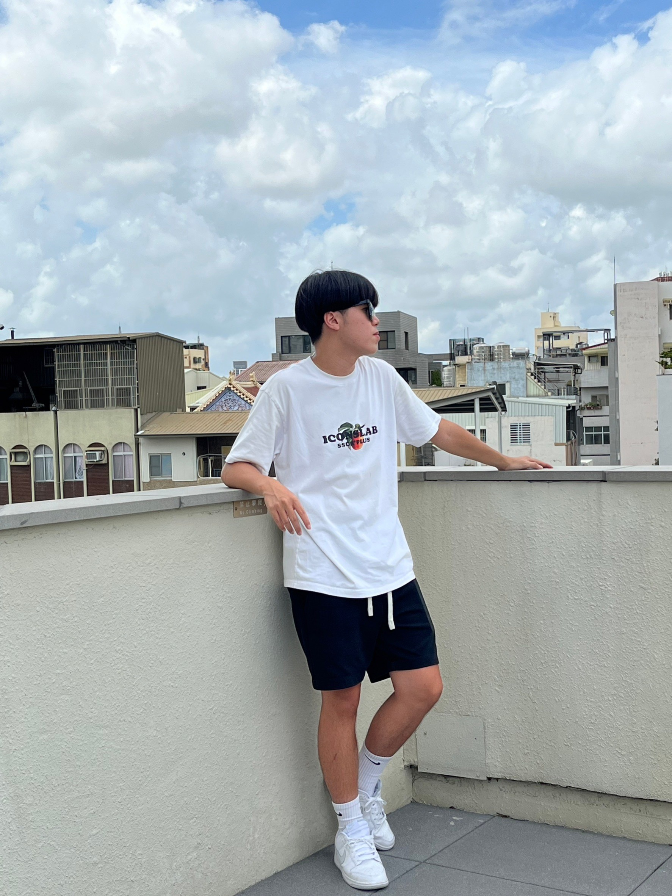
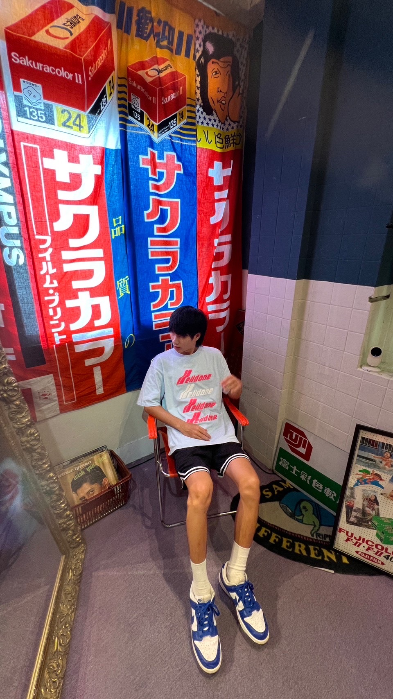
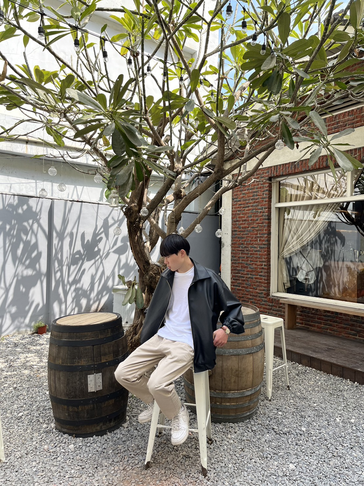

關於我們

甲班-謝皓丞
這次的製作網站對於我們來說算非常有難度的，我們製作完前端還要與後端做整合，而且是跨班級的合作，在製作的過程中常常跑版，需要調整非常多次，而且有些功能還需要上網去尋找方法，在這次的期末專題讓我學習到非常多的專業知識，也讓我了解到網站架設的基礎，也希望學習完這次的前端在以後也能運用。

甲班-康祐華
這次前後端的合作，是第一次體驗到一個團隊一起合作完成專案，而且還是要與乙班的人配合完成，不只讓我們自己學會前端的作業內容，也讓我學習到與不一樣的人團隊合作，雖然過程中需要很多自己要去查找的知識點與一路上的debug的過程，但這次的期末專案是我目前在大學中學習與收穫最大的成果。

甲班-孫堉誠
鞋子後段平台開發是一項挑戰性且具有技術深度的任務。在這過程中，我深刻體會到平台穩固性的關鍵性，需注重細節以確保使用者體驗。同時，有效的協作和清晰的溝通也是成功的關鍵。這次開發經驗不僅提升了我的技術能力，更讓我深入了解平台開發的複雜性和挑戰。